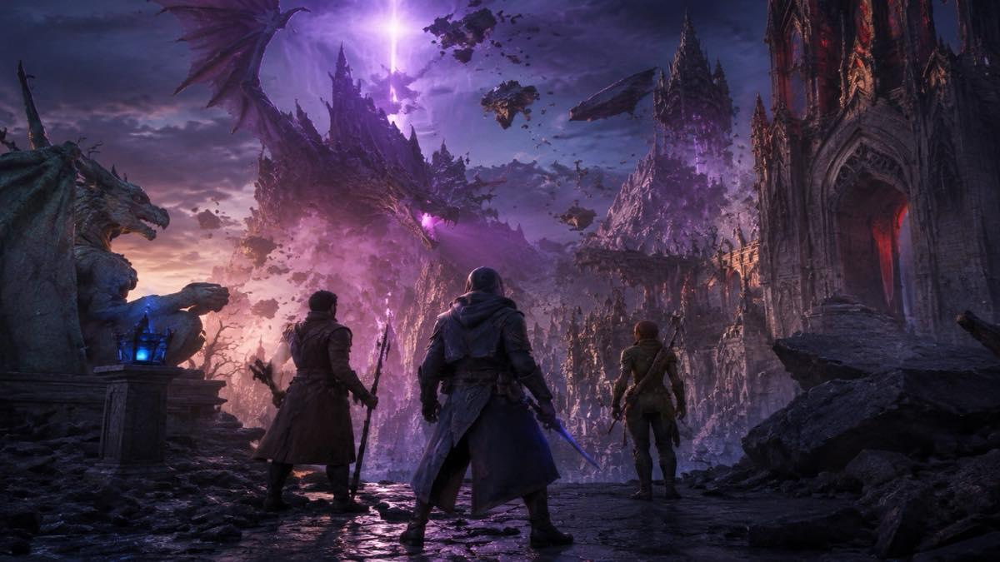
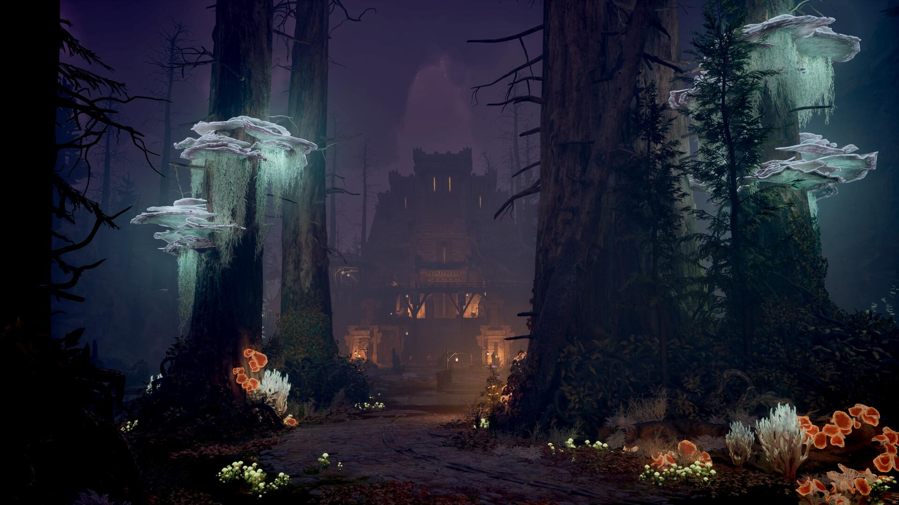
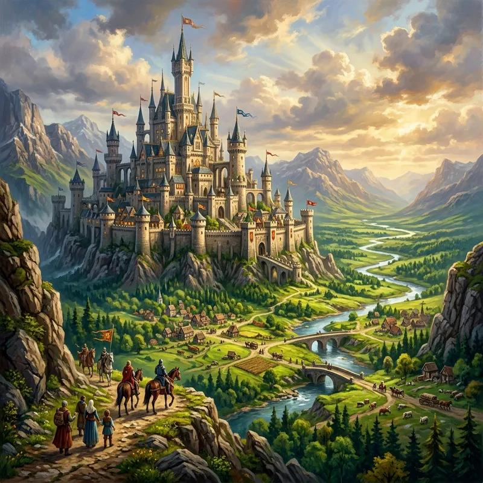

A magia dos videogames
Os videogames representam uma das formas mais populares de entretenimento digital. Eles combinam tecnologia, criatividade, música e narrativa para proporcionar experiências interativas.
Diferentemente de outras formas de entretenimento, os jogos permitem que os jogadores participem diretamente das histórias e influenciem os acontecimentos.
Com a evolução tecnológica, os gráficos, os efeitos sonoros e a inteligência artificial tornaram os jogos cada vez mais elaborados.
Principais gêneros de jogos

RPG
Os jogos de RPG permitem controlar personagens, desenvolver habilidades e participar de histórias com diferentes caminhos e possibilidades.
Aventura

Os jogos de aventura exploram descobertas, desafios, exploração de cenários e desenvolvimento narrativo.
Terror
Os jogos de terror trabalham com suspense, mistério e atmosferas que despertam curiosidade e tensão.
Estratégia

Os jogos de estratégia exigem planejamento, raciocínio e tomada de decisões para alcançar objetivos.
Os jogos e a tecnologia
A indústria dos videogames acompanha os avanços tecnológicos e utiliza recursos como inteligência artificial, computação gráfica e realidade virtual.
Essas tecnologias ajudam a construir ambientes interativos e experiências cada vez mais imersivas.
Além do entretenimento, os jogos também podem estimular criatividade, raciocínio lógico, resolução de problemas e trabalho em equipe.
Uma comunidade mundial
Os jogos conectam pessoas de diferentes lugares por meio de comunidades online, competições e experiências compartilhadas.
Os eventos de jogos eletrônicos, conhecidos como e-sports, também conquistaram espaço no cenário mundial do entretenimento.
O universo dos videogames continua crescendo e oferecendo novas possibilidades para jogadores, desenvolvedores e admiradores da tecnologia.